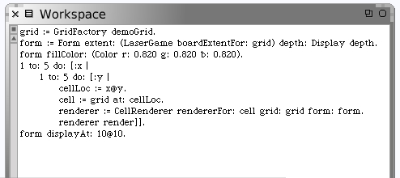
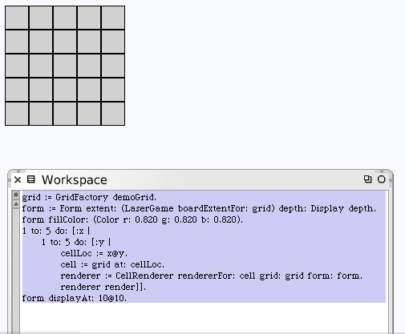

I wonder what would happen if we changed our workspace code to use the grid produced by our new grid factory?
The drawing looks exactly the same. This is good news because the renderers for the mirror and target cells, while not drawing in any content yet, all inherit the code from the generic cell renderer and properly draw in the borders.
We need to write the real content drawing code to prove this of course.